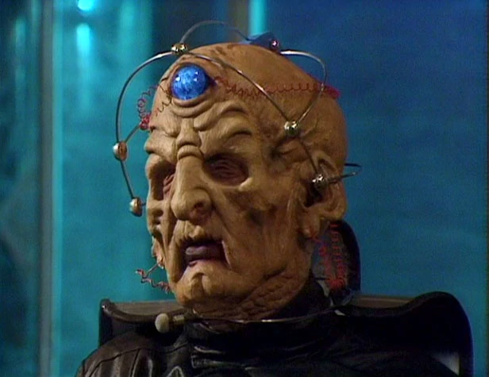

Davros

| Other Names | Dr. Savo |
| Species | Kaled |
| Home Planet | Skaro |
| Age | 163 |
| First Appearance | Skaro’s Lament |
| Previous ― |
Next Diamond Doctor |
A genius and meglomaniac in equal measure, Davros is the creator of the Daleks.
Character
Davros is a mad scientist and the Evil Creator of the Daleks. He is one of the Doctor's most notorious and insane enemies, yet they do have great respect for each other. Davros has one arm with a rubber glove and lives inside a wheelie bin.
Adventures
The Beginning
Davros had a sound mind early in his life, but the incident that crippled him and his overall experiences in the Thal-Kaled war left him a depraved and insane megalomaniac. He became tyrannical and ruthless, tolerating no opposition to his will and dismissing fairness and democracy as "the creeds of cowards". He did not believe the Daleks were evil, instead believing they would bring peace by becoming the sole life-forms of the universe; he believed different species could not peacefully co-exist, so believed the utter extermination of all other races was the only way the Daleks could succeed at bringing peace. (Genesis of the Daleks)
Infinite Infinities
Ex quod meis per, ea paulo eirmod intellegam usu, eam te propriae fabellas. Nobis graecis has at, an eum audire impetus. Ius epicuri verterem ex, qui cu solet feugiat consetetur. Placerat apeirian et sea, nec wisi viderer definiebas ex, at eum oratio honestatis.
Appearance
Ex quod meis per, ea paulo eirmod intellegam usu, eam te propriae fabellas. Nobis graecis has at, an eum audire impetus. Ius epicuri verterem ex, qui cu solet feugiat consetetur. Placerat apeirian et sea, nec wisi viderer definiebas ex, at eum oratio honestatis.
List of Appearances
Trivia
The Fractal Doctor was originally called the Crystal Doctor.